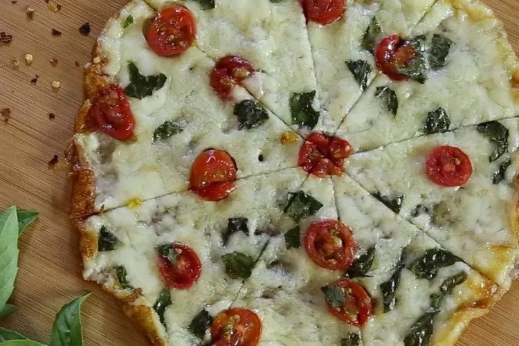

Cheesy-Crust Skillet Pizza

Description
An easy-to-cook pizza as detailed by themoodyfoodie on Allrecipes!
This recipe is entirely created on a SKILLET. That's right! And it requires no dough. A simple ONE-ongredient cheesy crust that makes for a great last-minute meal.
This recipe yields 2 servings and only takes 10 minutes of prep time and 5 minutes to cook!
Ingredients
- 1 ½ cups shredded part-skim mozzarella cheese
- 5 cherry tomatoes, thinly sliced
- 2 tablespoons torn fresh basil leaves
- 4 small fresh mozzarella balls (bocconcini), thinly sliced
Directions
- Heat a 10-inch non-stick skillet over medium-high heat. Sprinkle shredded mozzarella cheese evenly into hot skillet; cook until cheese is melted, 2 to 3 minutes.
- Arrange tomato slices, basil leaves, and fresh mozzarella slices on the melted cheese, leaving space for a "crust" to form; cook until top is bubbling and edges are browned, 2 to 3 minutes.
- Remove skillet from heat and loosen pizza with a spatula. Gently slice pizza onto a cutting board; cool for 1 minute before slicing.